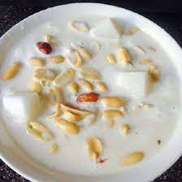

Soaked Garri

Description
Soaked Garri is a cold 'beverage' with ice cold water and sugar plus or minus roasted groundnuts.
Ingredients
- ¼ cup Garri
- 3 cups water
- Some ice cubes optional
- 3 cubes of Sugar / 1 Tbsp
- 2 tablespoon Powdered milk (optional)
- Pinch of salt (optional)
- ¼ cup roasted groundnuts (optional)
- ¼ cup coconut
Steps
- Pour water into the cereal bowl containing the dry Garri
- Sieve out any particle that floats
- Pour more fresh water into the Garri
- Pour more fresh water into the Garri
- Add the groundnuts or any other topping you prefer.